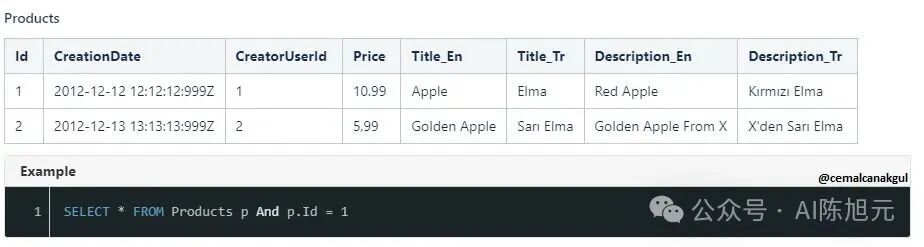

目录
引言：为何无代码平台的国际化如此独特且重要 核心架构：构建统一的国际化服务层 设计哲学：关注点分离 架构分层 关键考量：API的统一性与智能路由 静态内容国际化：深入后端Java代码 场景定义与挑战 核心策略：标准化与外部化 技术实施细节 动态内容国际化：赋能无代码配置 场景定义：用户生成元数据的挑战 核心策略：数据库驱动的翻译模型 后端服务实现 动态元数据渲染策略：服务端 vs. 客户端 问题本质：翻译的终点在哪里？ 方案一：服务端替换 (Server-Side Replacement) 方案二：客户端替换 (Client-Side Replacement) 决策建议与最佳实践 语言包管理：赋予客户个性化能力 功能需求：超越标准翻译 设计方案：导入、导出与覆盖 运行时动态加载机制 AI赋能：自动化初始语言包生成 方案说明：AI作为生产力倍增器 实施思路与流程 价值定位：成本与效率的平衡点 总结与展望
引言：为何无代码平台的国际化如此独特且重要
在数字化转型的浪潮中，无代码/低代码（No-Code/Low-Code）平台作为一种革命性的软件开发范式，正以前所未有的速度渗透到各行各业。这类平台的核心价值主张，在于通过可视化的界面和预构建的模块，赋予业务人员（而非专业开发者）快速构建和迭代应用的能力，从而极大地提升了业务敏捷性与创新效率。作为典型的软件即服务（SaaS）产品，无代码平台天然具备服务全球用户的潜力，而国际化（Internationalization, 简称i18n）则是其释放全球市场潜力的关键钥匙。
然而，无代码平台的国际化需求，远比传统软件复杂和深刻。传统软件的国际化，主要聚焦于将开发阶段固化的界面文本、提示信息等进行翻译。但对于无代码平台而言，其内容来源呈现出显著的二元结构：
- 静态内容（Static Content）
由平台开发者预设的、相对固定的文本。这包括平台自身的管理界面、菜单项、错误代码描述、帮助文档等。这部分与传统软件的i18n处理方式类似。 - 动态内容（Dynamic Content）
由平台的用户（或称“租户”）在运行时动态创建和配置的文本。这包括用户自定义的业务对象名称、字段标签、表单标题、选项集的值、自动化流程的节点描述等等。这些内容是应用的核心业务逻辑载体，其数量、内容和结构完全由用户决定，且存储于数据库中。
这种独特的二元内容结构，构成了无代码平台国际化的核心挑战。一个成功的国际化方案，必须能够无缝地处理这两种截然不同的内容源，为最终用户提供一个统一、沉浸式的本地化体验。如果方案只覆盖了静态内容，用户会看到一个“半汉化”的系统：平台框架是本地语言，而核心业务数据和表单却依然是外语，这将严重破坏用户体验和平台的专业性。因此，为基于Java的无代码平台设计一套全面、可扩展且易于维护的国际化方案，不仅是技术上的必然要求，更是其商业成功的战略基石。
本文旨在深入剖析这一复杂命题，为构建一套企业级的Java无代码平台国际化解决方案提供一份详尽的蓝图。我们将从顶层架构设计出发，确立“关注点分离”的核心原则；随后，层层递进，分别探讨静态内容和动态内容的具体技术实现策略，包括对Java标准库的深度运用和灵活的数据库模型设计；接着，我们将对元数据渲染的关键决策点——“服务端替换”与“客户端替换”进行详尽的优劣势分析；最后，我们将探讨如何通过开放语言包管理能力赋予客户个性化的自由度，并引入前沿的AI大语言模型技术，以自动化和智能化的方式，为国际化流程注入新的活力。本文的目标是提供一套理论严谨、技术可行、覆盖全面的解决方案，助力无代码平台真正跨越语言的鸿沟，走向世界。
核心架构：构建统一的国际化服务层
在应对无代码平台复杂的国际化需求时，一个清晰、健壮的顶层架构是成功的基石。若将国际化逻辑零散地嵌入到各个业务模块中，将不可避免地导致代码冗余、维护困难和扩展性瓶颈。因此，我们必须在架构层面确立“关注点分离”（Separation of Concerns）的核心设计哲学，构建一个统一的、专职的国际化服务层（I18n Service Layer）。
设计哲学：关注点分离
“关注点分离”是软件工程中的一项基本原则，它主张将一个复杂的系统分解为多个独立、低耦合的部分，每个部分只关注一个特定的功能或职责。在国际化场景中，这意味着：
- 业务逻辑的纯粹性
业务代码（如订单处理、用户管理）不应直接关心文本的翻译过程。它只需知道需要显示某个“概念”（如“登录失败”或“用户名”），并向国际化服务请求这个概念在当前用户语言环境下的具体表达。 - 国际化逻辑的集中化
所有与翻译相关的逻辑，包括如何确定用户语言、从何处加载翻译资源、如何处理占位符、如何实现回退机制等，都应被封装在统一的国际化服务层中。
遵循此原则，国际化服务层将成为平台中所有翻译需求的唯一入口和处理中心，从而实现逻辑的内聚和模块间的解耦。这不仅使系统结构更加清晰，也为未来的功能增强（如增加新的翻译源、引入缓存策略）提供了极大的便利。
架构分层
基于关注点分离的哲学，我们可以将国际化体系划分为清晰的三层架构：数据层、服务层和应用层。这种分层设计确保了职责的明确划分和系统的高内聚、低耦合。
1. 数据层 (Data Layer)
数据层是所有翻译文本的存储库。针对无代码平台的二元内容特性，我们必须区分处理两种类型的翻译资源：
- 静态资源 (Static Resources)
这部分内容由平台开发者定义，在软件构建时就已经确定。最适合采用Java生态中成熟且标准化的机制进行管理。我们选择基于文件的 `java.util.ResourceBundle`，其后端通常是 `.properties` 属性文件。这些文件与应用程序代码一同打包和部署，具有高性能和高可靠性。文件结构遵循 `basename_locale.properties` 的命名约定，例如 `messages_en_US.properties`、`messages_zh_CN.properties`。 - 动态资源 (Dynamic Resources)
这部分内容由租户在平台上动态创建，其生命周期与业务数据一致。因此，必须将其存储在数据库中。我们将设计专门的翻译表（详见后续章节），用于存储用户自定义内容（如对象名、字段标签等）的多语言版本。这种方式保证了数据的持久化、事务性以及与多租户架构的良好集成。
2. 服务层 (I18n Service)
服务层是整个架构的核心和大脑。它封装了所有底层的复杂性，对外提供一个简洁、统一的翻译API。其主要职责包括：
- API封装
定义一组清晰的接口，如 `getTranslation(String key, Locale locale)`、`getFormattedTranslation(String key, Locale locale, Object... args)`。 - 智能路由
服务内部需要有逻辑来判断一个给定的 `key` 属于静态资源还是动态资源。这可以通过Key的命名约定（例如，静态Key以 `static.` 开头，动态Key包含实体ID）或查询元数据来实现。 - 数据源访问
根据路由结果，服务层会决定是从文件系统加载 `.properties` 文件，还是查询数据库中的翻译表来获取译文。 - 回退逻辑 (Fallback)
当特定语言的翻译不存在时，服务层需要实现优雅的回退。例如，请求 `fr_FR` 的翻译失败时，可以尝试 `fr`，如果再失败，则回退到系统默认语言（如 `en_US`）。 - 缓存机制
为了提升性能，服务层可以引入缓存。对于不常变化的静态资源，可以在内存中进行缓存。对于数据库中的动态资源，可以使用Redis等分布式缓存来减少数据库压力。
3. 应用层 (Application Layer)
应用层是国际化服务的消费者。它包括平台的后端业务逻辑模块和前端UI组件。
- 后端消费
在Java后端，任何需要生成面向用户的文本（如API错误响应、邮件通知、日志记录）的地方，都应该注入并调用I18n Service，而不是硬编码字符串。 - 前端消费
前端UI的国际化可以通过两种方式实现（详见“渲染策略”章节）：要么后端在API层面已经完成了文本替换，要么后端将翻译资源（语言包）和原始数据分别提供给前端，由前端的i18n库（如 `i18next`）完成渲染。无论哪种方式，前端的翻译需求最终都源于后端提供的服务。
关键考量：API的统一性与智能路由
此架构成功的关键在于I18n Service提供的API必须足够抽象和统一。开发者在使用时，不应被“静态”和“动态”的概念所困扰。理想情况下，无论是获取一个静态的错误码描述，还是一个动态配置的表单字段名，都应该通过相似的接口调用。例如：
// 注入I18n服务
@Autowired
private I18nService i18nService;
public void processRequest(User currentUser) {
Locale userLocale = currentUser.getLocale();
// 获取静态错误消息
String staticError = i18nService.getTranslation("error.login.password.incorrect", userLocale);
// 获取动态字段标签 (假设key的格式为 "field:{fieldId}:label")
String dynamicLabel = i18nService.getTranslation("field:12345:label", userLocale);
// ...
}在上述伪代码中，`i18nService` 内部会解析 `key` 的格式。当它看到 `error.login.password.incorrect` 这种模式时，它会去加载 `.properties` 文件。当它看到 `field:12345:label` 这种模式时，它会解析出实体ID `12345`，然后去查询数据库的翻译表。这种内部的智能路由机制，使得应用层的开发体验极为流畅和一致，完美地体现了“关注点分离”的设计思想，为构建一个可扩展、可维护的全球化无代码平台奠定了坚实的架构基础。
静态内容国际化：深入后端Java代码
静态内容是平台国际化的第一道防线，它构成了用户与平台交互的基础框架。处理好静态内容的国际化，是提供专业、一致本地化体验的前提。这部分内容主要指在开发阶段由程序员硬编码（Hard-coded）在Java源代码、配置文件或模板中的文本字符串。
场景定义与挑战
静态内容的范围广泛，主要包括：
- UI界面元素
如菜单项、按钮标签（“保存”、“取消”）、固定的标题、表头等。 - 系统消息
如操作成功提示、验证错误信息、异常堆栈中的可读描述等。 - 日志信息
需要输出给运维人员或用户的、包含描述性文本的日志。 - 默认配置
系统中某些配置项的默认值，如果它们是文本形式。
主要的挑战在于，这些字符串往往散落在项目的各个角落，如果不加以系统性管理，会导致以下问题：
- 维护噩梦
当需要增加一门新语言或修改某个译文时，需要在整个代码库中进行搜索和替换，极易出错和遗漏。 - 代码与内容耦合
业务逻辑与显示内容紧密耦合，违反了“关注点分离”原则，降低了代码的可读性和可维护性。 - 无法交付给专业翻译
翻译人员无法直接处理源代码，将代码文件交给他们既不安全也不现实。
因此，核心任务是将这些硬编码的字符串从代码中“解放”出来，进行外部化和标准化管理。
核心策略：标准化与外部化
针对Java后端，最成熟、可靠且无外部依赖的解决方案是采用Java平台内建的国际化标准机制。
技术选型：`java.util.ResourceBundle` + `.properties` 文件
Java的 `ResourceBundle` 是一个抽象类，它充当了语言环境特定资源的容器。其最常见的实现是 `PropertyResourceBundle`，它从 `.properties` 文本文件中加载资源。这一组合是Java国际化的基石，被广泛应用于各类企业级应用中。根据Oracle官方文档，`ResourceBundle`的设计允许程序以一种语言环境无关的方式编写，将所有特定于语言环境的信息隔离到资源包中。
采用此策略的优势显而易见：
- 标准化
遵循Java官方标准，社区支持广泛，学习资源丰富。 - 解耦
将文本内容（值）与代码逻辑（通过Key引用）完全分离。 - 易于管理
`.properties` 文件是纯文本，易于版本控制（如Git），也便于交付给非技术人员（如翻译团队）进行编辑。 - 高性能
`ResourceBundle` 内部有高效的缓存机制，一旦加载，后续访问速度极快。
技术实施细节
将静态内容国际化的过程可以分解为四个关键步骤：识别、创建、映射和重构。
1. 识别硬编码字符串
第一步是在现有代码库中系统地找出所有需要被国际化的硬编码字符串。手动查找效率低下且容易遗漏，因此必须借助工具。主流的Java IDE和静态分析工具都提供了强大的支持。
- IntelliJ IDEA
提供了强大的代码检查功能。通过 `Analyze > Run Inspection By Name...` 并输入 `Hardcoded strings`，可以一键扫描整个项目，并列出所有硬编码的字符串字面量。JetBrains的文档详细介绍了此功能，甚至允许直接在检查结果上执行“i18nize”操作，自动完成提取和替换。 - SpotBugs
作为FindBugs的继任者，SpotBugs是一个流行的静态分析工具，可以集成到Maven或Gradle构建流程中。它可以配置规则来检测硬编码字符串，尤其是在生成面向用户的输出时。虽然它本身不直接提供一键重构，但能有效保证代码质量，防止新的硬编码字符串被引入。 - 自定义脚本/工具
对于大型遗留系统，也可以使用如 `hardcodes` (GitHub) 这样的通用工具，或编写自定义脚本来批量查找。
2. 创建资源文件
识别出需要翻译的文本后，我们需要创建用于存储它们的 `.properties` 文件。这些文件必须遵循严格的命名规范，以便 `ResourceBundle` 能够根据 `Locale` 自动找到它们。
命名规范：`basename_language_COUNTRY_variant.properties`
`basename`：资源包的基础名，如 `messages`, `errors`, `labels`。建议按模块或功能划分，避免单个文件过于庞大。 `language`：ISO 639标准的小写双字母语言代码，如 `en` (英语), `zh` (中文)。 `COUNTRY`：ISO 3166标准的大写双字母国家/地区代码，如 `US` (美国), `CN` (中国)。此部分可选。
例如，在项目的 `src/main/resources/i18n` 目录下，可以创建如下文件结构：
/src/main/resources/
└── i18n/
├── messages.properties (默认语言, 如英语)
├── messages_zh_CN.properties (简体中文)
├── messages_ja_JP.properties (日语)
└── messages_fr.properties (法语, 不区分国家)Baeldung的一篇文章指出，`ResourceBundle` 的加载机制会遵循一个精确的回退路径。例如，如果请求的 `Locale` 是 `zh_CN`，它会依次查找 `messages_zh_CN`, `messages_zh`, 最后是默认的 `messages`。因此，提供一个不带任何后缀的默认文件是最佳实践，可以防止 `MissingResourceException`。
3. 键值对映射与Key命名规范
在 `.properties` 文件中，内容以 `key=value` 的形式存储。设计一套清晰、一致的Key命名规范至关重要，它直接影响到代码的可读性和资源的可维护性。
推荐的Key命名规范：使用点分格式，体现层级结构，如 `module.submodule.element.description`。
示例 `messages_zh_CN.properties`：
# 登录模块
page.login.title=用户登录
button.login.submit=登录
button.common.cancel=取消
# 错误信息
error.login.failure=用户名或密码错误。
error.api.param.invalid=请求参数无效: {0}
user.welcome=你好, {0}！欢迎回来。注意 `error.api.param.invalid` 和 `user.welcome` 中的 `{0}`，这是为 `java.text.MessageFormat` 准备的占位符。
4. 代码重构
最后一步是将源代码中的硬编码字符串替换为对 `ResourceBundle` 的调用。这需要根据文本的类型（简单文本或带占位符的复合消息）采用不同的方法。
简单文本替换
对于不含动态参数的纯文本，直接使用 `ResourceBundle.getString(key)` 方法。
// 错误的方式：硬编码
// String pageTitle = "用户登录";
// 正确的方式：从资源包获取
Locale userLocale = Locale.SIMPLIFIED_CHINESE; // 实际应用中应从用户会话或请求头动态获取
ResourceBundle bundle = ResourceBundle.getBundle("i18n.messages", userLocale);
String pageTitle = bundle.getString("page.login.title");带占位符的复合消息处理
对于需要在运行时插入动态值的消息，必须结合使用 `java.text.MessageFormat` 类。这个类可以将一个包含占位符的模式字符串和一组对象格式化为一个本地化的字符串。
Oracle的Java教程中强调，`MessageFormat` 使得以语言中立的方式生成连接消息成为可能。它不仅能处理简单的 `{index}` 占位符，还支持更复杂的格式，如日期、时间、数字和选择（choice）。
String userName = "张三";
int newMessagesCount = 5;
// 获取带参数的欢迎消息
String welcomePattern = bundle.getString("user.welcome");
String welcomeMsg = MessageFormat.format(welcomePattern, userName);
// 输出: "你好, 张三！欢迎回来。"
// 获取带参数的错误消息
String errorPattern = bundle.getString("error.api.param.invalid");
String errorMsg = MessageFormat.format(errorPattern, "userId");
// 输出: "请求参数无效: userId"通过以上四个步骤的系统性实施，可以确保Java后端的所有静态内容都被有效地国际化，为平台提供一个坚实、可扩展的本地化基础。同时，将所有文本资源集中管理，也为后续的AI批量翻译和客户自定义语言包等高级功能铺平了道路。
动态内容国际化：赋能无代码配置
如果说静态内容国际化是构建全球化应用的地基，那么动态内容的国际化则是其上层建筑的精装修。在无代码平台中，用户即是“开发者”，他们通过界面配置创建的业务实体、流程和规则，构成了应用的核心价值。这些用户生成（User-Generated）的元数据，其国际化处理方案直接决定了平台的专业深度和最终用户的体验上限。
场景定义：用户生成元数据的挑战
动态内容的核心特征是其**来源和生命周期与平台用户（租户）紧密绑定**，并且**持久化于数据库中**。典型的动态内容包括：
- 数据模型定义
用户创建的自定义对象（如“客户”、“合同”）的显示名称，以及其下属字段（如“联系电话”、“签约日期”）的标签。 - UI配置
用户设计的表单标题、分组面板名称、视图名称、仪表盘标题等。 - 业务规则与流程
工作流节点的名称、审批意见的模板、自动化规则的描述等。
处理这些内容的挑战与静态内容截然不同：
- 数据源
翻译资源必须存储在数据库中，以便与主数据关联，并支持事务性操作。 - 多租户
在SaaS架构下，不同租户的翻译需求可能是隔离的。A公司的“客户”可能希望翻译成“Client”，而B公司可能希望是“Customer”。 - 可扩展性
平台必须能够支持未来增加任何新的可翻译实体类型，而无需对核心翻译架构进行重大修改。 - 性能
当需要展示大量动态内容（如一个长列表或复杂表单）时，翻译查询的性能至关重要。
核心策略：数据库驱动的翻译模型
为了应对上述挑战，我们需要设计一个灵活且可扩展的数据库模型来存储动态内容的翻译。业界主要有两种设计思路：列扩展模式和附加翻译表模式。
反模式：列扩展模式 (Column-per-Locale)
这是一种直观但极其僵化的设计。即在需要翻译的实体表中，为每一种支持的语言增加一个列。
例如，对于一个存储字段元数据的表 `meta_fields`：
多篇关于多语言数据库设计的文章都明确指出了此模式的弊端：
- 极差的扩展性
每增加一门新的语言，都需要对所有包含翻译字段的表执行 `ALTER TABLE` 操作，这在生产环境中是高风险且繁琐的。 - 数据稀疏与冗余
如果某个实体只有部分语言的翻译，那么其他语言的列将为 `NULL`，造成存储空间浪费。 - 查询复杂性
应用程序代码需要根据当前语言动态构建SQL查询，选择正确的 `label_xx` 列。 - 维护困难
随着语言和可翻译字段的增多，表结构会变得异常臃肿和难以管理。
因此，除非应用场景极其简单且确定未来不会增加新语言，否则应坚决避免此方案。

推荐模式：附加翻译表 (Separate Translation Table)
这是一种更为优雅和可扩展的方案。其核心思想是保持主实体表的纯粹性，只存储语言无关的核心数据，然后创建一个或多个独立的翻译表来存储所有多语言文本。
我们推荐采用一个**通用的、集中的翻译表**来服务平台中所有需要翻译的动态资源。这种设计被称为“单翻译表”或“实体-属性-值（EAV）”模型的变体。
数据库表设计示例：
主表 `meta_fields` (存储字段元数据):
通用翻译表 `i18n_translations`:
复合唯一索引：在 `(tenant_id, resource_id, resource_type, locale)` 上建立唯一索引，确保每个资源在特定语言下只有一条翻译记录。
Phrase的博客文章也推荐了这种分离翻译表的复杂方法，并指出尽管查询会变得更复杂，但它带来的灵活性是无与伦比的。此设计的优势在于：
- 极高的扩展性
增加新语言只需在 `i18n_translations` 表中插入新行。增加新的可翻译实体类型（如“工作流节点描述”）也只需定义一个新的 `resource_type` 值即可，完全无需修改数据库结构。 - 数据规范化
遵循数据库设计范式，避免了数据冗余，主表保持简洁。 - 多租户支持
通过 `tenant_id` 字段，可以轻松实现租户间的翻译隔离和个性化定制。 - 集中管理
所有翻译数据集中在一个表中，便于管理、备份和维护。
后端服务实现
基于上述数据库模型，后端I18n Service的实现逻辑也变得清晰。
查询逻辑与回退机制
当需要获取一个动态内容的翻译时，例如获取ID为 `101` 的字段标签，后端服务需要执行类似以下的查询逻辑：
SELECT
f.id,
f.field_name,
-- 优先使用当前语言的翻译，如果不存在，则使用默认标签作为回退
COALESCE(t.translation_value, f.default_label) AS display_label
FROM
meta_fields f
LEFT JOIN
i18n_translations t ON f.id = t.resource_id
AND t.resource_type = 'meta_field_label'
AND t.locale = ? -- 传入当前用户的locale, e.g., 'en-US'
AND t.tenant_id = ? -- 传入当前租户的ID
WHERE
f.id = 101;这里的 `COALESCE` 函数是实现回退机制的关键。它会返回参数列表中的第一个非 `NULL` 值。当 `LEFT JOIN` 没有找到匹配的翻译记录时，`t.translation_value` 为 `NULL`，此时 `COALESCE` 会自动选用 `f.default_label` 作为 `display_label` 的值。这种方式既高效又优雅。
API设计
后端向前端提供的API，其设计将取决于下一章节讨论的渲染策略。但无论采用哪种策略，API都应清晰地传达元数据与其翻译之间的关系。例如，在服务端替换策略下，API直接返回翻译好的结果；在客户端替换策略下，API则返回包含翻译Key的原始元数据，并另提供一个获取语言包的API。无论如何，底层的数据库设计和查询逻辑都为这两种上层策略提供了坚实的数据支持。
动态元数据渲染策略：服务端 vs. 客户端
在确定了动态内容的数据库存储模型后，下一个关键的架构决策点是：这些翻译好的文本，究竟应该在何时、何地与原始元数据结合，并最终呈现给用户？这个问题的答案，即渲染策略的选择，将深刻影响系统的前后端职责划分、性能表现以及用户体验。主要存在两种主流方案：服务端替换（Server-Side Replacement）和客户端替换（Client-Side Replacement）。
问题本质：翻译的终点在哪里？
问题的本质可以归结为：对于一个需要国际化的动态UI元素（例如一个表单字段），前端从后端API获取的JSON载荷中，`label` 字段的值应该是最终的译文（如 "用户名"），还是一个指向译文的引用（即翻译Key，如 `field_label_user_username`）？
这两种选择分别对应了服务端替换和客户端替换两种模式，它们在数据流、计算负载和开发复杂性上有着根本的不同。
方案一：服务端替换 (Server-Side Replacement)
这是一种传统且直观的方案，将翻译的责任完全放在服务端。
流程
- 前端请求
前端向后端发起一个获取元数据的API请求，例如 `GET /api/forms/123`。请求头中通常会携带用户的语言偏好，如 `Accept-Language: zh-CN`。 - 后端处理
服务端接收请求，并解析出用户的 `locale`。 根据表单ID `123`，查询表单定义及其所有字段的元数据主表。 对查询出的每一个可翻译属性（如字段的 `label`、`placeholder`），使用用户的 `locale` 和租户ID，去 `JOIN` 通用翻译表 `i18n_translations`。 在内存中将原始元数据对象中的相应属性值，替换为查询到的译文。如果译文不存在，则使用回退值（如默认语言的原文）。 - 后端响应
服务端将一个**完全翻译好**的、即用型（Ready-to-render）的JSON对象返回给前端。 - 前端渲染
前端接收到JSON后，无需进行任何翻译相关的处理，直接根据数据结构递归渲染出UI界面。对于前端而言，它并不知道国际化的存在。
优点
- 前端逻辑极简
前端的开发模型非常简单，它只是一个纯粹的数据渲染器。这降低了前端的开发复杂度和对特定i18n库的依赖，使得前端技术栈可以更自由地选型或更换。 - 无“内容闪烁”（FOUC）问题
由于返回的数据已经是最终形态，页面加载时不会出现先显示原文或翻译Key，然后突然跳变为译文的现象，用户体验平滑。 - 数据与逻辑一致性强
所有翻译逻辑和数据源都集中在后端，便于统一管理、调试和保证数据一致性。 - SEO友好
对于需要服务端渲染（SSR）以优化搜索引擎收录的页面，此方案能直接输出包含本地化内容的HTML，对SEO更为友好。
缺点
- 服务端压力较大
每次API请求都需要执行相对复杂的 `JOIN` 查询和数据组装逻辑，对数据库和应用服务器的CPU都构成了一定的压力，尤其是在高并发场景下。 - 运行时切换语言体验差
如果用户在界面上切换语言，前端必须重新向后端请求所有当前页面所需的元数据，导致页面需要整体刷新或重新加载数据，体验不流畅，无法做到“瞬时”切换。 - 缓存利用率低
由于API的响应内容与用户的 `locale` 强绑定，无法对元数据本身进行通用的、跨用户的缓存。只能对“特定用户-特定语言-特定资源”的组合进行缓存，缓存命中率相对较低。
方案二：客户端替换 (Client-Side Replacement)
这是一种更现代的、适应单页应用（SPA）架构的方案，它将翻译的最终执行权交给了客户端。
流程
- 前端请求
应用初始化或进入新页面时，前端会并行或串行地发起两个（或多于两个）请求： 请求元数据：`GET /api/forms/123`。 请求当前 `locale` 的语言包：`GET /api/language-packs/dynamic?locale=zh-CN`。 - 后端处理
对于元数据请求，后端只需查询主表，返回包含**翻译Key**而非最终文本的原始元数据。例如，`label` 字段的值可能是 `field:101:label`。 对于语言包请求，后端查询 `i18n_translations` 表，将当前租户和 `locale` 下所有动态内容的翻译Key和译文，聚合成一个大的JSON对象（即语言包）返回。 - 前端处理
前端接收到原始元数据和语言包。 将语言包喂给前端的i18n库（如 `i18next`, `vue-i18n`）。 在渲染UI时，当遇到一个需要翻译的属性（如 `label: "field:101:label"`），前端会调用i18n库的翻译函数，如 `t("field:101:label")`，由库在本地根据语言包完成Key到Value的替换。
next-intl等现代前端i18n框架的设计理念也体现了这种趋势，即便是服务端组件，也倾向于在服务端完成翻译，将最终文本传递给客户端组件，这本质上是服务端替换的一种变体。但在纯客户端渲染的SPA中，将翻译逻辑和资源包下发到客户端是主流做法。
优点
- 运行时切换语言体验极佳
用户切换语言时，前端只需异步加载目标语言的语言包，然后用新的语言包重新渲染当前视图即可。整个过程无需重新请求核心业务数据，响应速度快，体验如丝般顺滑。 - 服务端性能更优
元数据API的查询逻辑变得非常简单，通常无需 `JOIN`，极大降低了数据库和应用服务器的负载。语言包API也可以通过高效的缓存策略（如CDN缓存、Redis缓存）进行优化。 - 前后端职责清晰解耦
后端专注于提供纯粹的数据和翻译资源，前端专注于展示逻辑和用户交互。这种解耦使得前后端可以独立开发和演进。 - 元数据可缓存性强
原始元数据不包含任何与语言相关的信息，因此可以被所有语言的用户共享，可以利用HTTP缓存或CDN进行高效缓存，显著提升性能。
缺点
- 前端逻辑复杂化
前端需要引入并配置i18n库，管理语言包的加载、切换和状态，对前端工程师的要求更高。 - 可能出现FOUC (Flash of Untranslated Content)
如果语言包的加载速度慢于元数据的加载和渲染，用户可能会在极短的时间内看到未被翻译的Key，影响观感。这需要通过预加载、打包优化等手段来缓解。 - 首次加载时间可能更长
相对于单个API请求，客户端需要额外发起获取语言包的请求，可能会轻微增加页面的总加载时间。 - 安全性考量
将所有翻译Key暴露在前端，可能会泄露一些关于系统结构的元信息，需要评估其风险。
决策建议与最佳实践
选择哪种方案并非绝对，而是基于业务场景、技术栈和性能目标的权衡。
决策矩阵
| 用户体验 (语言切换) | 极佳 (瞬时) | |
| 前端开发复杂度 | 低 | |
| 后端性能开销 | 低 (简单查询) | |
| 可缓存性 | 高 (元数据可通用缓存) | |
| 前后端耦合度 | 低 |
综合建议：
对于追求极致用户体验、功能复杂的现代无代码平台（通常是基于React, Vue, Angular等框架的SPA），强烈推荐采用“客户端替换”方案。其在语言切换体验、系统性能和架构解耦方面的巨大优势，是构建企业级全球化应用的理想选择。
最佳实践与优化策略：
为了克服“客户端替换”方案的缺点，可以实施以下优化措施：
- 语言包懒加载与分块
不要一次性加载所有语言的所有翻译，而是按需加载。可以将语言包按页面或功能模块进行拆分，只加载当前页面需要的翻译。 - 利用CDN加速
将生成的语言包文件（可以是静态JSON文件）部署到CDN，利用其全球节点为用户提供最快的下载速度。 - 缓存策略
在客户端利用 `localStorage` 或 `IndexedDB` 缓存语言包，避免用户每次访问都重新下载。同时，配合HTTP缓存头（如 `ETag`, `Cache-Control`）实现高效的缓存验证。 - 缓解FOUC
在语言包加载完成前，可以显示一个加载骨架屏（Skeleton Screen），而不是直接渲染带Key的UI，从而提升感知体验。
通过精心设计和优化，客户端替换方案能够扬长避短，为无代码平台提供一个既高性能又具卓越用户体验的国际化渲染架构。
语言包管理：赋予客户个性化能力
一个真正企业级的无代码SaaS平台，不仅要提供标准的多语言支持，还必须认识到不同客户在不同行业、不同文化背景下，对术语和表达有着独特的偏好和要求。例如，一个客户可能习惯将“Leads”称为“潜在客户”，而另一个客户则坚持使用“销售线索”。为了满足这种个性化需求，平台必须提供一套完善的语言包管理机制，允许客户（租户）自定义翻译。
功能需求：超越标准翻译
语言包管理功能的核心目标是，在平台提供的标准翻译基础上，赋予客户进行覆盖和扩展的能力。具体需求包括：
- 可导出性
客户应能以一种标准、可编辑的格式（如JSON, XLIFF）导出平台当前支持的任何语言的完整语言包。这包括平台的静态内容和客户自己创建的动态内容。 - 可编辑性
客户可以在线下使用任何文本编辑器或专业的翻译工具对导出的语言包进行修改，以符合其企业内部的术语规范。 - 可导入性
客户能将修改后的语言包上传回平台，系统能够智能地解析并应用这些自定义翻译。 - 隔离性与安全性
一个客户的自定义翻译绝对不能影响到其他客户。所有自定义内容必须在租户级别进行严格隔离。 - 实时生效
导入新的语言包后，其变更应能近乎实时地在应用中体现出来，无需漫长的部署或等待。
设计方案：导入、导出与覆盖
为了实现上述需求，我们需要设计一套覆盖语言包生命周期（导出 -> 编辑 -> 导入 -> 应用）的完整工作流，并以后端API和前端管理界面的形式呈现给客户。
1. 语言包导出
- 前端界面
在平台的管理后台，提供一个“语言包管理”页面。页面上允许管理员选择一个“语言”（如“简体中文 (zh-CN)”）和一个“内容范围”（如“平台默认”、“我的自定义内容”或“全部”），然后点击“导出”按钮。 后端API：设计一个导出API，例如 `GET /api/v1/i18n/language-packs/export`。
GET /api/v1/i18n/language-packs/export?locale=zh-CN&scope=all
Accept: application/json- API实现逻辑
接收到请求后，后端首先获取该租户的默认静态资源包（从 `.properties` 文件读取）。 接着，查询 `i18n_translations` 数据库表，获取该租户在该 `locale` 下所有的动态内容翻译。 将静态和动态的键值对进行合并。对于同时存在于静态和动态资源中的Key（虽然不常见，但应处理），可以约定一个优先级，例如租户的自定义翻译优先。 将合并后的完整键值对聚合成一个JSON对象。 将JSON对象作为文件流返回给前端，触发浏览器下载。文件名可以包含语言和时间戳，如 `language-pack_zh-CN_20250907.json`。 文件格式：推荐使用JSON，因为它结构清晰，易于机器解析，也便于人工阅读。XLIFF (XML Localization Interchange File Format) 是一个更专业的翻译标准格式，如果需要对接专业的翻译管理系统（TMS），也可以支持导出为XLIFF。
导出的JSON示例 (`zh-CN`)：
{
"static": {
"button.common.save": "保存",
"error.login.failure": "用户名或密码错误。"
},
"dynamic": {
"field:101:label": "客户名称",
"form:202:title": "新客户录入表单"
}
}
2. 语言包导入
- 前端界面
在“语言包管理”页面，提供一个文件上传控件，允许客户选择编辑好的语言包文件进行上传。 - 后端API
设计一个导入API，例如 `POST /api/v1/i18n/language-packs/import`，使用 `multipart/form-data` 格式。 - API实现逻辑
查询条件：`WHERE tenant_id = ? AND resource_id = ? AND resource_type = ? AND locale = ?` (Key需要被解析成`resource_id`和`resource_type`)。 如果记录存在，则 `UPDATE` 其 `translation_value`。 如果记录不存在，则 `INSERT` 一条新记录。 - 接收与校验
接收上传的文件，首先校验文件格式（是否为合法的JSON）、文件大小，并从文件名或文件内容中解析出 `locale`。 - 解析与比对
解析JSON文件，遍历其中的每一个键值对。 数据写入：对于每一个键值对，执行“更新或插入”（UPSERT）操作到 `i18n_translations` 表中。
重要：客户上传的自定义翻译，只应写入到 `i18n_translations` 数据库表中。平台的默认静态 `.properties` 文件是只读的，绝不能被客户的上传操作所修改。这保证了平台的基线翻译不受影响，并实现了租户间的隔离。
- 版本控制（可选）
为了支持回滚，可以在导入时为语言包创建一个版本号，并将每次导入的记录与版本号关联。这样客户就可以在不同版本之间切换。 - 清除缓存
成功导入后，必须立即使相关的缓存失效（如Redis中该租户该语言的语言包缓存），以确保下次请求能加载到最新的翻译。
运行时动态加载机制
客户的个性化翻译最终要能在运行时体现出来，这依赖于一个“覆盖”（Overlay）或“分层”（Layered）的加载机制。
当系统（无论是前端请求语言包，还是后端I18n Service进行翻译）需要获取某个Key的译文时，其查找顺序应为：
- 第一层：租户自定义翻译（数据库）
首先，根据当前 `tenant_id` 和 `locale`，在 `i18n_translations` 表中查找该Key的翻译。如果找到，则直接返回该值。 - 第二层：平台默认翻译（数据库/文件）
如果在第一层没有找到，则查找平台的默认翻译。如果找到，则返回该值。 对于动态内容的Key，可能在 `i18n_translations` 表中有一条 `tenant_id` 为系统默认租户（或为NULL）的记录。 对于静态内容的Key，则从内存中加载的对应 `locale` 的 `.properties` 资源包中查找。 - 第三层：默认语言回退
如果当前 `locale` 的默认翻译也不存在，则启动回退机制，尝试查找默认语言（如 `en-US`）的翻译。 - 第四层：返回Key本身
如果所有层级都查找失败，作为最后的手段，直接返回请求的Key本身。这使得开发和测试人员可以轻易地发现缺失的翻译。
通过这种分层覆盖的机制，平台既保证了有一套标准的、高质量的基线翻译，又赋予了客户充分的灵活性和个性化空间，完美地平衡了SaaS平台的标准化与客户的定制化需求。
AI赋能：自动化初始语言包生成
在国际化进程中，成本最高、最耗时的环节之一便是初始翻译。当平台决定支持一门新的语言时，需要将成千上万条静态和动态内容的文本进行翻译，这通常需要投入大量的人力和时间。然而，随着大语言模型（LLM）技术的飞速发展，我们现在有能力利用AI来自动化这一过程，极大地提升效率和降低成本。
方案说明：AI作为生产力倍增器
引入AI的核心目标不是完全取代人工翻译，而是将其定位为一个强大的**生产力倍增器**。AI翻译的角色是：
快速生成高质量的翻译草稿。
利用AI，我们可以快速地将所有源语言文本翻译成目标语言，生成一个完整的初始语言包。这个语言包可能并非100%完美，但其质量通常足以覆盖80%-90%的场景。随后，再由专业的本地化人员或母语使用者在此基础上进行审核、校对和润色，修正其中不准确或不符合文化习惯的部分。这一“AI生成 + 人工精修”的模式，相比于从零开始的纯人工翻译，可以节省大量的时间和预算。
实施思路与流程
构建一个AI自动翻译流程，主要包括语料准备、调用AI翻译和结果整合三个步骤。
1. 语料准备
首先，需要将所有待翻译的源语言文本（例如，中文）整理出来。
- 静态内容语料
编写一个脚本，直接读取并解析基准语言的 `.properties` 文件（如 `messages_zh_CN.properties`），提取出所有的 `value` 值。 - 动态内容语料
编写一个脚本，查询数据库中所有需要翻译的动态内容。例如，查询 `meta_fields` 表中的 `default_label` 字段，`forms` 表中的 `title` 字段等。
将这些提取出的文本，连同它们的唯一标识（Key），整理成一种结构化的格式，如JSON数组，方便后续处理。
[
{ "key": "error.login.failure", "source_text": "用户名或密码错误。" },
{ "key": "field:101:label", "source_text": "客户名称" },
...
]2. 调用AI翻译
接下来，通过调用大语言模型的API，将准备好的语料进行批量翻译。
- 模型选择
为了保证翻译质量、响应速度和数据合规性，推荐优先选择国内领先的大模型服务。这些模型在处理中英互译以及其他主流语种的翻译任务上，已经达到了非常高的水准。可供选择的优秀模型包括： - 字节跳动 - 豆包大模型
- 阿里巴巴 - 通义千问
- DeepSeek-AI - DeepSeek
- 月之暗面 - Kimi
Prompt设计：Prompt（提示词）的质量直接决定了翻译输出的质量。一个精心设计的Prompt应包含以下元素：
示例Prompt:
你是一个专业的软件本地化专家。请将以下JSON数组中每个对象的'source_text'字段从中文翻译为English。请保持'key'字段不变，并确保翻译结果符合商业软件的专业术语习惯。返回一个与输入结构完全相同的JSON数组。
待翻译内容:
[
{ "key": "error.login.failure", "source_text": "用户名或密码错误。" },
{ "key": "field:101:label", "source_text": "客户名称" }
]- 角色设定
明确告知AI其角色。例如：“你是一位专业的软件本地化专家，精通IT术语和用户界面文案的翻译。” - 任务描述
清晰地说明任务。例如：“请将以下JSON对象中的`value`字段从中文翻译为【目标语言，如：English】。” - 风格与约束
提出具体要求。例如：“请保持翻译结果简洁、专业，符合商业软件的语境。请不要翻译`key`字段。输出结果必须是纯净的、格式与输入一致的JSON。” - 输入数据
将准备好的语料（可以分批次）作为输入。 - 批量处理
由于API通常有单次请求的Token限制，需要将大量的语料分块（chunking），然后通过循环或并发请求的方式，分批次提交给API进行翻译。
3. 结果整合
最后，脚本需要收集所有API的返回结果，并将其重新组装成平台所需的语言包格式。
- 解析AI输出
解析AI返回的JSON结果。 - 生成语言包文件
根据翻译结果，生成新的 `.properties` 文件（对于静态内容）或准备好需要插入到 `i18n_translations` 表的数据（对于动态内容）。 - 导入系统
将AI生成的语言包作为“草稿版本”导入到系统中。可以在管理界面上为其打上“AI生成，待审核”的标签，以便后续的人工校对。
价值定位：成本与效率的平衡点
必须明确，AI翻译并非银弹，它在处理特定领域的术语、文化俚语或需要高度创造性的文案时，仍可能出错。然而，它的核心价值在于，能够以极低的成本和极高的速度，完成从0到1的翻译过程。
如上图所示，AI承担了绝大部分的初始翻译工作量。这使得本地化团队可以将宝贵的精力集中在最具价值的15%的工作上——即审核、润色和确保文化适应性。这种人机协作的模式，是当前在成本、质量和速度三者之间取得最佳平衡的有效途径，也是现代软件工程拥抱AI浪潮，实现降本增增效的典型范例。
总结与展望
本文系统性地构建了一套专为Java无代码平台设计的全景国际化（i18n）解决方案。该方案的核心在于深刻理解并有效应对了平台内容来源的二元性——即开发者定义的静态内容与用户配置的动态内容。通过实施一套分层、解耦的统一架构，我们成功地将复杂的国际化问题分解为一系列可管理、可实施的技术模块。
方案核心回顾：
- 统一架构
我们确立了以“关注点分离”为原则的统一国际化服务层，它作为翻译能力的中枢，智能地路由请求到不同的数据源，向上层应用提供了简洁一致的API。 - 分类策略
针对静态内容，我们采用Java标准的 `ResourceBundle` 与 `.properties` 文件机制，实现了高效、可靠的外部化管理。针对动态内容，我们设计了基于“附加翻译表”的数据库模型，确保了高度的可扩展性和多租户支持。 - 关键决策
我们深入分析了动态元数据渲染的两种关键策略——服务端替换与客户端替换，并基于对用户体验、系统性能和开发复杂度的权衡，推荐在现代SPA应用中优先采用客户端替换方案，并给出了相应的优化实践。 - 客户赋能
通过设计完善的语言包导入导出功能和“覆盖式”加载机制，方案赋予了最终客户（租户）自定义翻译的能力，满足了企业用户的个性化术语需求。 - AI融合
我们引入了利用大语言模型（LLM）自动化生成初始语言包的创新思路，将AI定位为提升翻译效率、降低初始成本的强大工具，实现了传统i18n流程与前沿技术的有机结合。
这套方案不仅解决了Java无代码平台在技术实现层面的具体问题，更重要的是，它提供了一套思考和解决此类复杂国际化问题的系统性方法论。它强调了架构先行、标准优先、体验为王和拥抱变化的设计理念。
未来展望：
随着技术的发展和用户需求的演进，无代码平台的国际化领域仍有广阔的探索空间。未来的发展方向可能包括：
- 深度智能化 (Deeper Intelligence)
- 上下文感知翻译
未来的AI翻译将不仅仅是文本替换，而是能够理解UI布局、业务场景和用户上下文，提供更精准、更具表现力的翻译。例如，AI可以根据按钮的可用空间，自动选择最合适的简短译文。 - 智能术语库管理
平台可以利用AI自动从客户的业务数据中学习和提取行业术语，构建租户专属的术语库，并在翻译过程中自动应用，确保专业术语的一致性。 - 流程自动化 (Process Automation)
- 与CI/CD集成
将国际化流程深度集成到持续集成/持续部署（CI/CD）流水线中。当开发者提交了包含新翻译Key的代码时，系统可以自动触发流程：提取Key -> 调用AI翻译 -> 将草稿推送到翻译管理平台 -> 通知校对人员。 - 可视化在线编辑
提供“所见即所得”（WYSIWYG）的在线翻译编辑工具，允许翻译人员直接在应用界面上点击文本进行修改，并实时预览效果，极大地提升翻译效率和准确性。Tolgee等开源项目已经展示了这种“in-context”翻译的巨大潜力。 - 极致体验优化 (Ultimate Experience Optimization)
- 性能的极限追求
持续优化客户端语言包的加载策略，例如使用更高效的二进制格式替代JSON，或者基于用户行为预测性地预加载语言资源。 - 超越文本的本地化
国际化不仅是语言，还包括数字格式、日期时间、货币、图像、颜色甚至布局方向（如从右到左的RTL语言）。未来的平台将提供更全面的本地化配置能力，让应用在每一个文化细节上都尽善尽美。
总之，国际化对于无代码平台而言，不是一个附加功能，而是其核心竞争力的一部分。通过实施本文提出的全面、深入且面向未来的解决方案，Java无代码平台将能真正打破语言和文化的壁垒，在全球化的市场中赢得先机，赋能世界各地的用户构建属于他们自己的创新应用。